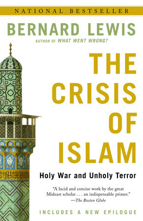
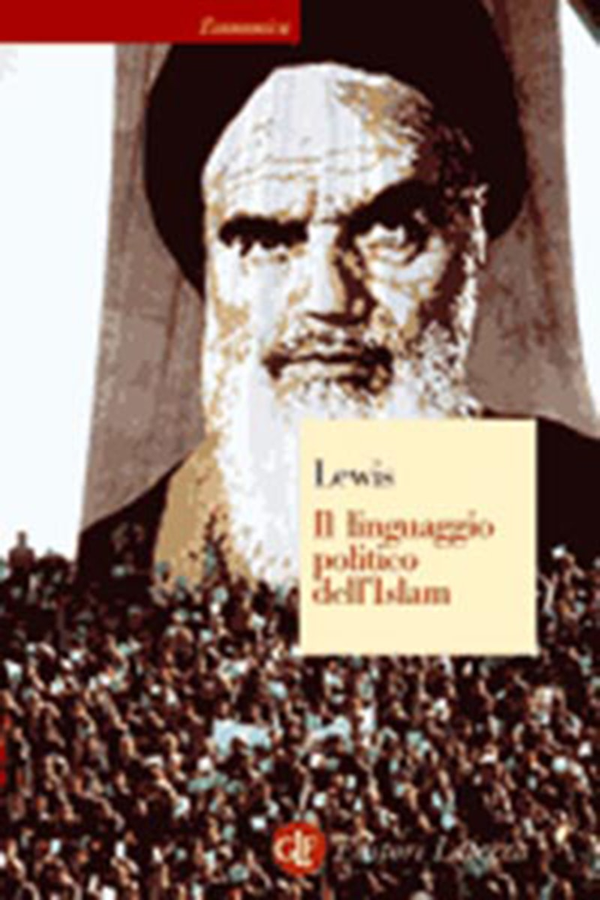

1:23:02 · 12 OPERE
Il richiamo dal passato.
Il filo del discorso
Il contributo torna alla lettura di Platone dopo una lunga discussione su conoscenza, opinione e appartenenza ideologica. Il relatore sostiene che il dialogo richieda disponibilità a esaminare le ragioni e a cambiare giudizio: quando ogni affermazione è ridotta a preferenza personale, a suo avviso viene meno anche la possibilità di discutere. Contrappone l’esercizio del domandare all’accumulo di risposte già confezionate e considera i classici strumenti per riconoscere i meccanismi del consenso. Questa tesi viene sviluppata attraverso esempi molto polemici. Il relatore critica il dibattito pubblico su scienza, religione e conflitti e invita a leggere direttamente i testi, raccomandando tre opere di Bernard Lewis. Ricorda una propria conversazione con missionari mormoni e richiama Bartleby per il rifiuto di aderire a ciò che viene proposto. Passa poi alla guerra fra Israele e Hamas, alle vittime di violenza e all’informazione giornalistica, sostenendo che l’identificazione con una parte possa rendere selettiva la compassione. I giudizi sull’Islam, sulle proteste e sui mezzi di comunicazione appartengono alla sua argomentazione; le singole testimonianze evocate non vengono assunte come prova di una responsabilità collettiva dei palestinesi o dei fedeli di una religione. Le note distinguono inoltre le ricostruzioni documentate dalle affermazioni inesatte o non riscontrate. Il centro della parte finale è la Repubblica. Dopo aver spiegato che lo scopo del canale è incoraggiare una lettura autonoma, il relatore commenta il ritratto platonico del tiranno: le promesse iniziali e la remissione dei debiti, il ricorso a guerre che mantengono il bisogno di un capo, la povertà che ostacola l’indipendenza e l’eliminazione di chi possiede coraggio, capacità o risorse. Nella metafora della purga rovesciata, il potere toglie alla comunità le sue componenti migliori invece di curarla. Il relatore applica questi passaggi alla comunicazione contemporanea, al conformismo e alla costruzione della dipendenza; sono analogie politiche, non diagnosi cliniche o dimostrazioni delle intenzioni di persone determinate. La conclusione collega il rifiuto del tiranno al richiamo paolino a respingere il male, all’uguaglianza evocata attraverso Jefferson e alla reverenza per la vita di Schweitzer. Il filo comune, per il relatore, è un’etica capace di aspirare all’universalità e di sostenere il dissenso. La lettura del passato viene così proposta come esercizio di autonomia e responsabilità del giudizio.
I libri nel discorso
Rigoletto (opera lirica)
Identificazione probabile
Copertina Ricordi della riduzione completa per canto e pianoforte: Copertina Ricordi della riduzione completa per canto e pianoforte
Copertina autentica della riduzione per canto e pianoforte dell’opera completa, Ricordi, codice CP42313/05, ISBN 9781480304796. Non partitura orchestrale, non singola aria e non registrazione o allestimento riconosciuto nel video.
Riferimento ricavato dalla trascrizione automatica.
Passaggio 1:38 ↗ · Fonti e libro ↗
Bartleby lo scrivano
Copertina della raccolta: Bompiani · Bartleby lo scrivano e altri racconti · 2018
Copertina della raccolta Bompiani che contiene Bartleby lo scrivano. Non è presentata come copertina di un’edizione autonoma del racconto né come l’esemplare citato nel video.
Riferimento ricavato dalla trascrizione automatica.
Passaggio 10:12 ↗ · Fonti e libro ↗
Corano
Copertina: BUR Classici, edizione aggiornata
Edizione con introduzione, traduzione e commento di Alessandro Bausani, a cura di Layla Mustapha Ammar. Anno della ristampa non dedotto dalla copertina; nessuna edizione attribuita al video.
Riferimento ricavato dalla trascrizione automatica.
Passaggio 11:49 ↗ · Fonti e libro ↗
The Crisis of Islam: Holy War and Unholy Terror / La crisi dell’islam. Le radici dell’odio verso l’Occidente
Copertina inglese Random House Trade Paperbacks, 2004: Copertina inglese Random House Trade Paperbacks, 2004
Paperback inglese del 2 marzo 2004, ISBN 9780812967852, con nuova postfazione. L’opera è del 2003; la copertina non identifica l’edizione italiana menzionata nel video.
Riferimento ricavato dalla trascrizione automatica.
Passaggio 15:13 ↗ · Fonti e libro ↗
Islam and the West
Identificazione probabile
Copertina: Oxford University Press, 1993
Edizione illustrativa dell'opera; nessuna edizione è attribuita al video.
Riferimento ricavato dalla trascrizione automatica.
Passaggio 15:19 ↗ · Fonti e libro ↗
The Political Language of Islam / Il linguaggio politico dell’Islam
Copertina italiana Economica Laterza, 2005: Copertina italiana Economica Laterza, 2005
Edizione Laterza 2005, ISBN 9788842077640, traduzione di Biancamaria Amoretti Scarcia. Copertina della stessa opera, senza conferma che sia l’esemplare posseduto o mostrato nel video.
Riferimento ricavato dalla trascrizione automatica.
Passaggio 15:26 ↗ · Fonti e libro ↗
Libro di Mormon
Copertina: Church Distribution · edizione italiana di riferimento
Copertina reale di riferimento; l’edizione non è identificata come quella citata nel video.
Riferimento ricavato dalla trascrizione automatica.
Passaggio 27:55 ↗ · Fonti e libro ↗
The Innocents Abroad
Copertina: Penguin Classics · 2002 · inglese
Immagine autentica dell’opera, controllata visivamente; non identifica l’edizione usata nel video.
Riferimento ricavato dalla trascrizione automatica.
Passaggio 45:13 ↗ · Fonti e libro ↗
Lettera ai Romani
Copertina della Bibbia completa · San Paolo, 2014: Libro del Nuovo Testamento distinto dalla Bibbia nel suo insieme. Copertina della Bibbia San Paolo 2014, Nuova Versione dai Testi Antichi, ISBN 9788821593246; non una edizione autonoma della Lettera. Il testo di confronto è la versione CEI sul sito vaticano, non automaticamente la stessa traduzione del volume illustrato.
Riuso dichiarato della copertina autentica del corpus biblico completo; contiene la Lettera ai Romani, ma non è un suo frontespizio o un volume autonomo. La edizione del video non è identificata. La CEI del testo online e la Nuova Versione dai Testi Antichi del volume fotografato restano distinte.
Riferimento ricavato dalla trascrizione automatica.
Passaggio 47:17 ↗ · Fonti e libro ↗Bibbia
Identificazione probabile
Copertina: San Paolo, 2014 · Nuova Versione dai Testi Antichi · edizione di riferimento
Riferimento ricavato dalla trascrizione automatica.
Passaggio 50:30 ↗ · Fonti e libro ↗
La Repubblica
Copertina: Laterza · La Repubblica · edizione con testo a fronte di riferimento
Immagine associata all’ISBN di riferimento e controllata visivamente; edizione e traduzione non identificate come quelle citate o lette nel video.
Riferimento ricavato dalla trascrizione automatica.
Passaggio 1:00:00 ↗ · Fonti e libro ↗
Dichiarazione d’indipendenza degli Stati Uniti d’America
Identificazione probabile
Facsimile: incisione di Stone del 1823: Documento del 4 luglio 1776 · incisione di William J. Stone del 1823
Riproduzione documentaria dell’incisione di Stone del 1823 conservata dai National Archives. Non è la pergamena originale del 1776, né la copertina di un libro.
Riferimento ricavato dalla trascrizione automatica.
Passaggio 1:19:01 ↗ · Fonti e libro ↗